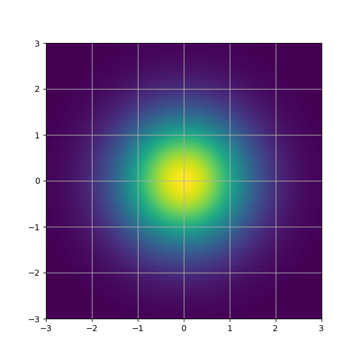

\(
\def\sc#1{\dosc#1\csod}
\def\dosc#1#2\csod{{\rm #1{\small #2}}}
\newcommand{\dee}{\mathrm{d}}
\newcommand{\Dee}{\mathrm{D}}
\newcommand{\In}{\mathrm{in}}
\newcommand{\Out}{\mathrm{out}}
\newcommand{\pdf}{\mathrm{pdf}}
\newcommand{\Cov}{\mathrm{Cov}}
\newcommand{\Var}{\mathrm{Var}}
\newcommand{\ve}[1]{\mathbf{#1}}
\newcommand{\ves}[1]{\boldsymbol{#1}}
\newcommand{\mrm}[1]{\mathrm{#1}}
\newcommand{\etal}{{et~al.}}
\newcommand{\sphere}{\mathbb{S}^2}
\newcommand{\modeint}{\mathcal{M}}
\newcommand{\azimint}{\mathcal{N}}
\newcommand{\ra}{\rightarrow}
\newcommand{\mcal}[1]{\mathcal{#1}}
\newcommand{\X}{\mathcal{X}}
\newcommand{\Y}{\mathcal{Y}}
\newcommand{\Z}{\mathcal{Z}}
\newcommand{\x}{\mathbf{x}}
\newcommand{\y}{\mathbf{y}}
\newcommand{\z}{\mathbf{z}}
\newcommand{\tr}{\mathrm{tr}}
\newcommand{\sgn}{\mathrm{sgn}}
\newcommand{\diag}{\mathrm{diag}}
\newcommand{\Real}{\mathbb{R}}
\newcommand{\sseq}{\subseteq}
\newcommand{\ov}[1]{\overline{#1}}
\DeclareMathOperator*{\argmax}{arg\,max}
\DeclareMathOperator*{\argmin}{arg\,min}
\newcommand{\data}{\mathrm{data}}
\newcommand{\N}{\mathcal{N}}
\newcommand{\Hil}{\mathcal{H}}
\)
Generative Modeling
Generative modeling is the problem of transforming a noise distribution $p_{\mrm{noise}}$ to a data distribution $p_{\mrm{data}}$.
- $p_{\mrm{noise}}$ is a well-known distribution, like the standard Gaussian distribution $\mcal{N}(0,I)$.
- $p_{\mrm{data}}$ is probability distribution you want.
|  |
$\xrightarrow{\ \ \ ??? \ \ \ }$ |
|
| $p_{\mrm{noise}}$ |
|
$p_{\mrm{data}}$ |
There's one more constraint. We do not have direct access to $p_{\data}$.
We only have samples $x^{(1)}$, $x^{(2)}$, $x^{(3)}$, $\dotsc$, $x^{(N)}$ that comes from the distribution.
[<<]
[Top]
[>>]